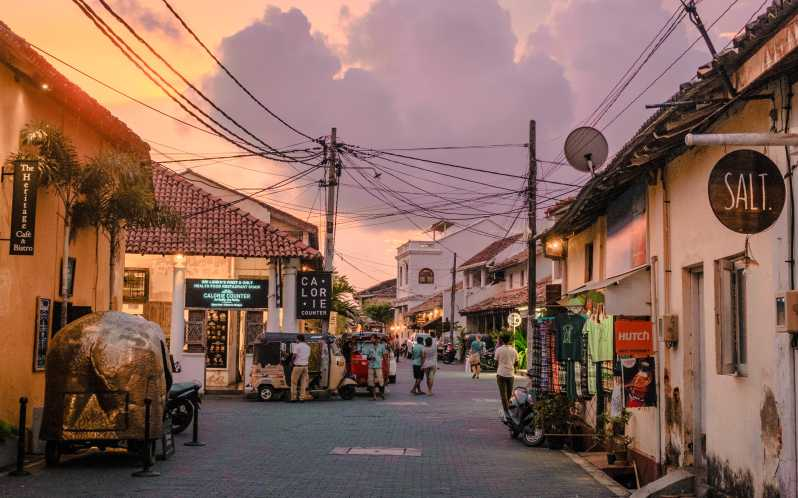
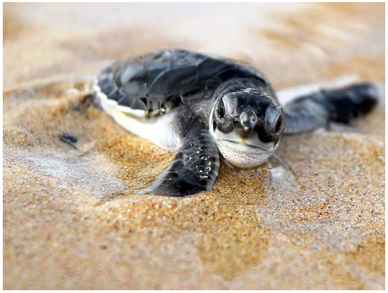
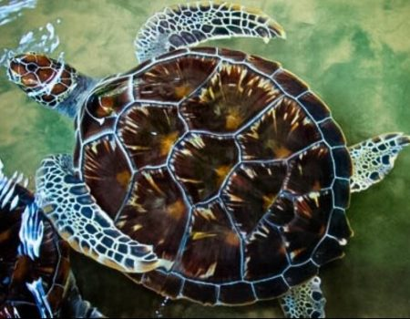

Kosgoda is a beach town in southern Sri Lanka that is well worth a visit for a variety of reasons. The turtle conservation project, where you may witness numerous species of turtles in their natural habitat, is one of Kosgoda's primary attractions. You can learn about conservation initiatives and watch as newborn turtles are released into the sea. Kosgoda is also noted for its rich local culture, which can be experienced in temples, markets, and festivals. Kosgoda's people are pleasant and open, making it simple to immerse oneself in the local culture.
The beaches in Kosgoda are perfect for water sports such as surfing, kiteboarding, and windsurfing. You can rent equipment or take lessons from experienced instructors. Kosgoda is a fishing village, and the seafood here is fresh and delicious. You can try different seafood dishes at the local restaurants and cafes. Overall, Kosgoda is a beautiful and unique destination in Sri Lanka that offers a perfect combination of nature, culture, and adventure.
Kosgoda is a beach town in southern Sri Lanka that is well worth a visit for a variety of reasons. The turtle conservation project, where you may witness numerous species of turtles in their natural habitat, is one of Kosgoda's primary attractions. You can learn about conservation initiatives and watch as newborn turtles are released into the sea. Kosgoda is also noted for its rich local culture, which can be experienced in temples, markets, and festivals. Kosgoda's people are pleasant and open, making it simple to immerse oneself in the local culture.
The beaches in Kosgoda are perfect for water sports such as surfing, kiteboarding, and windsurfing. You can rent equipment or take lessons from experienced instructors. Kosgoda is a fishing village, and the seafood here is fresh and delicious. You can try different seafood dishes at the local restaurants and cafes. Overall, Kosgoda is a beautiful and unique destination in Sri Lanka that offers a perfect combination of nature, culture, and adventure.
Kosgoda, on Sri Lanka's southwest coast, is well-known for its turtle hatcheries and conservation activities. Here are some places in Kosgoda where you can see turtle hatcheries. These are just a few of the many turtle hatcheries that can be found in Kosgoda. Each hatchery has its unique features and focus areas, so it's worth exploring a few to get a comprehensive understanding of turtle conservation efforts in the area.
